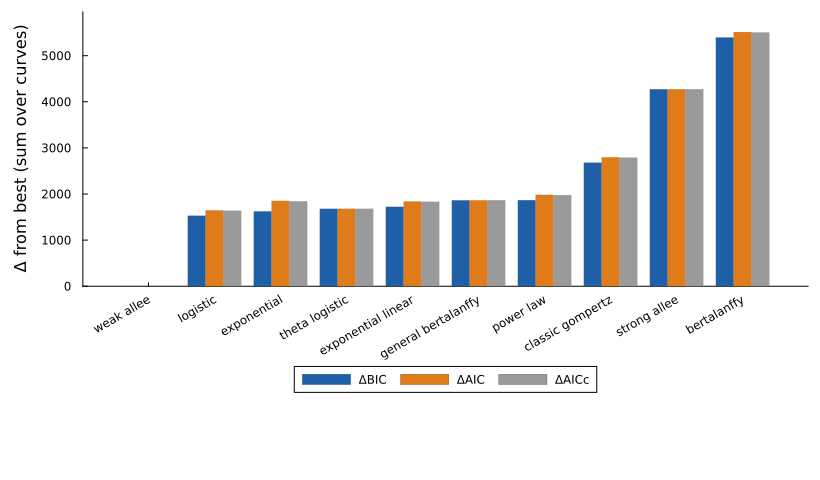
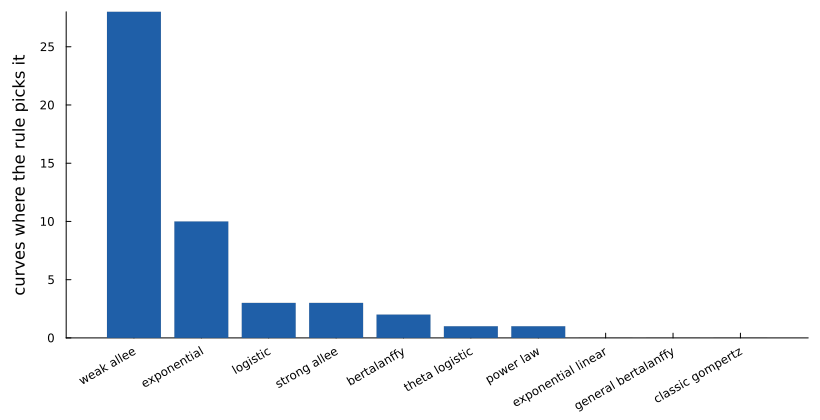
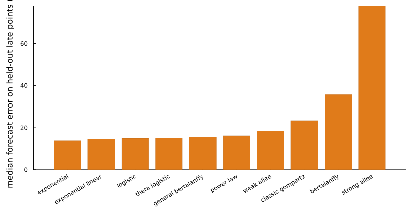

BT-474 growth at low seeding density
Johnson KE et al. (2019) PLoS Biol 17(8):e3000399 · doi:10.1371/journal.pbio.3000399 · source: https://github.com/brocklab/Johnson-AlleeGrowthModel · licence: none stated (repository); article CC BY 4.0
BT-474 breast cancer cells seeded at very low numbers (from 2 to about 1,000 cells per well) and counted by time-lapse imaging every few hours for up to two weeks; 427 wells in the source. Johnson and colleagues showed that growth at these densities departs from exponential growth and points to an Allee effect: the per-cell growth rate rises with density instead of being highest when cells are sparse.
What this page fits. An evenly spaced 48 of the 427 wells, which keeps every seeding density, with the strong and weak Allee laws added to the growth panel. Profiles are skipped here to keep the run near an hour on four cores; set profiles = true in pipeline.toml to add them.
Reading the result. Pooled over wells, the weak Allee law wins by a wide margin and is the pick on 28 of 48 wells, which agrees with the paper. Wells seeded with only two cells are the exception: they are so noisy that plain exponential growth is enough. The forecast check favours the simpler laws, because the late part of a two-week series is nearly exponential once the population has escaped low density.
Model comparison
Each of the 48 curves was fitted separately with every model. Criteria are summed over curves and shown as differences from the best model. The rule picks the model with the fewest parameters within 2 BIC of the best: weak allee.
| Model | k | ΔBIC | ΔAIC | ΔAICc | Curves where picked |
|---|---|---|---|---|---|
| weak allee (pick) | 3 | 0.0 | 0.0 | 0.0 | 28 |
| logistic | 2 | 1528.1 | 1644.1 | 1636.6 | 3 |
| exponential | 1 | 1622.1 | 1854.1 | 1841.7 | 10 |
| theta logistic | 3 | 1678.7 | 1678.7 | 1678.7 | 1 |
| exponential linear | 2 | 1722.3 | 1838.3 | 1830.8 | 0 |
| general bertalanffy | 3 | 1862.3 | 1862.3 | 1862.3 | 0 |
| power law | 2 | 1865.3 | 1981.2 | 1973.7 | 1 |
| classic gompertz | 2 | 2679.7 | 2795.7 | 2788.2 | 0 |
| strong allee | 3 | 4271.7 | 4271.7 | 4271.7 | 3 |
| bertalanffy | 2 | 5394.5 | 5510.5 | 5503.0 | 2 |



Forecast check
Each model was refitted on the first 70% of each curve and asked to predict the rest.
| Model | Median relative error (%) | Predictions within 20% (%) |
|---|---|---|
| exponential | 13.9 | 69.3 |
| exponential linear | 14.7 | 66.3 |
| logistic | 15.0 | 63.7 |
| theta logistic | 15.1 | 63.8 |
| general bertalanffy | 15.7 | 61.8 |
| power law | 16.2 | 62.4 |
| weak allee | 18.4 | 54.9 |
| classic gompertz | 23.4 | 42.7 |
| bertalanffy | 35.7 | 18.0 |
| strong allee | 77.9 | 9.0 |

Reproduce
python3 -I showcase/data/prepare.py --only johnson2019_bt474
julia --project=showcase -t auto showcase/run_pipeline.jl --only johnson2019_bt474Fitted with GrowthParameterEstimation.jl 0.5.5. Results: showcase/results/johnson2019_bt474/.